Accueil/Rejoins la bande/La boîte à images
photocopie, colle et ciseaux
La boîte à images de Mamie
Tout ce qui fait la tête du site, rangé pour que tu t'en serves : les couleurs, les lettres, les tampons, les bouts de scotch, le portrait de Mamie et les photos d'archives avec leurs crédits. Fais ton tract, ton affiche ou ta vignette aux couleurs de la bande. Une seule règle : des mains humaines, pas de machine à images.
 Mamie dit : « Sers-toi, imprime, fais tourner. »
Mamie dit : « Sers-toi, imprime, fais tourner. »
// quatre encres et du papier
Les couleurs
Papier crème, noir profond, rouge militant, et le jaune ou le rose en accent, comme une affiche sortie de l'atelier. Le texte reste toujours noir sur clair, ou clair sur noir ou rouge foncé.
- Papier
#ebe3d1 - Encre
#171414 - Rouge militant
#e1301c - Rouge foncé (texte clair dessus)
#a51b0c - Jaune affiche
#f5b63b - Rose
#ff5aa8
// les caractères de l'imprimerie
Les lettres
Quatre polices libres (licence SIL Open Font License), installables gratuitement : celles du site.
Archivo Black · les titres
Archivo · le texte courant, lisible en petit
Special Elite · la machine à écrire de Mamie
Alfa Slab One · les gros mots d'affiche
Lettres de rançon
// le matériel de collage
Les éléments
Ils sont faits en code, sans image : on les reprend tels quels sur le site, et ils se recopient facilement à la main sur papier.
Le tampon
En haut des fiches, il dit ce qu'on a entre les mains : « Lu par la bande », « Droit français », « Mémoire des luttes ». Rouge, de travers, l'encre un peu usée.
La note de marge
Une remarque glissée à côté du texte, comme au stylo sur une photocopie. Courte, jamais une information à elle seule.
Un bout de scotch, et la carte tient au mur.
Le scotch et la note
La note à la machine à écrire, scotchée de travers : les conseils de Mamie.
 Mamie dit : « Sers-toi, imprime, fais tourner. »
Mamie dit : « Sers-toi, imprime, fais tourner. »
Mamie dit
Le portrait de Mamie et sa phrase, en haut de chaque rubrique. Le ton : une camarade qui transmet, familière sans être caricaturale.
// le fil conducteur
Le portrait de Mamie
Capuche noire, foulard, poing levé. C'est le seul portrait de Mamie : on ne le redessine pas à la machine, on ne le détourne pas pour une cause qui n'est pas la sienne.


// gravures et photos d'époque
Les archives
Les 71 images d'archives du site, toutes venues de Wikimedia Commons : documents d'époque du domaine public ou photos sous licence libre. Pour les reprendre, garde le crédit et la licence indiqués sous chaque image (et vérifie la licence sur Commons pour un usage imprimé).


,_pris_%C3%A0_la_prison_des_Chantiers_%C3%A0_Versailles._Commune_de_Paris,_1871._PH19727-4.jpg){kind=link}


.jpg){kind=link}


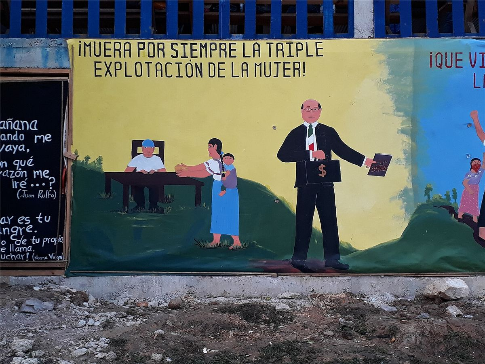


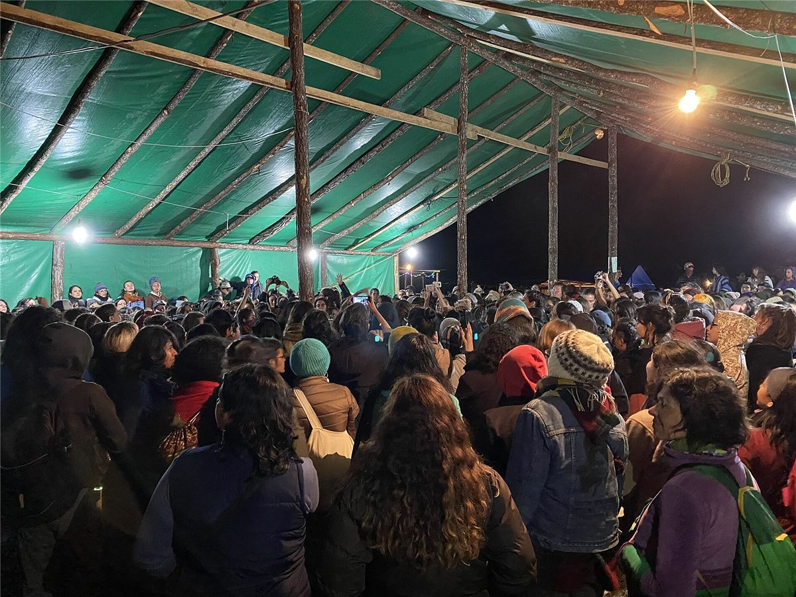


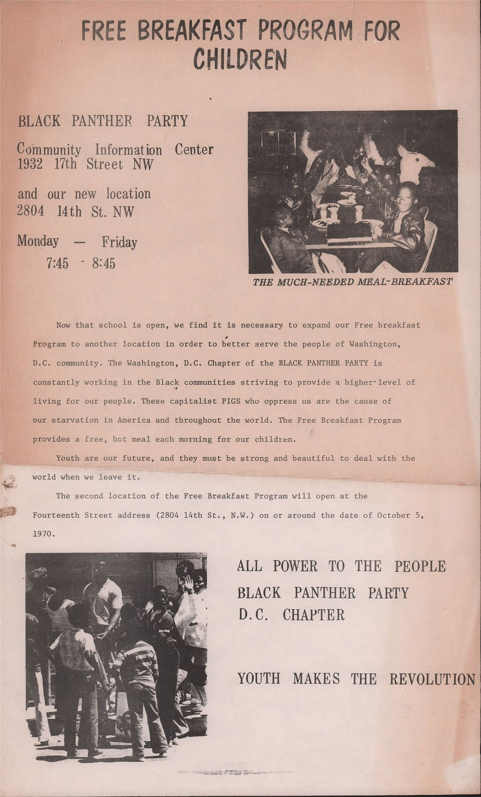


_en_2018.jpg){kind=link}


.jpg){kind=link}

.jpg){kind=link}

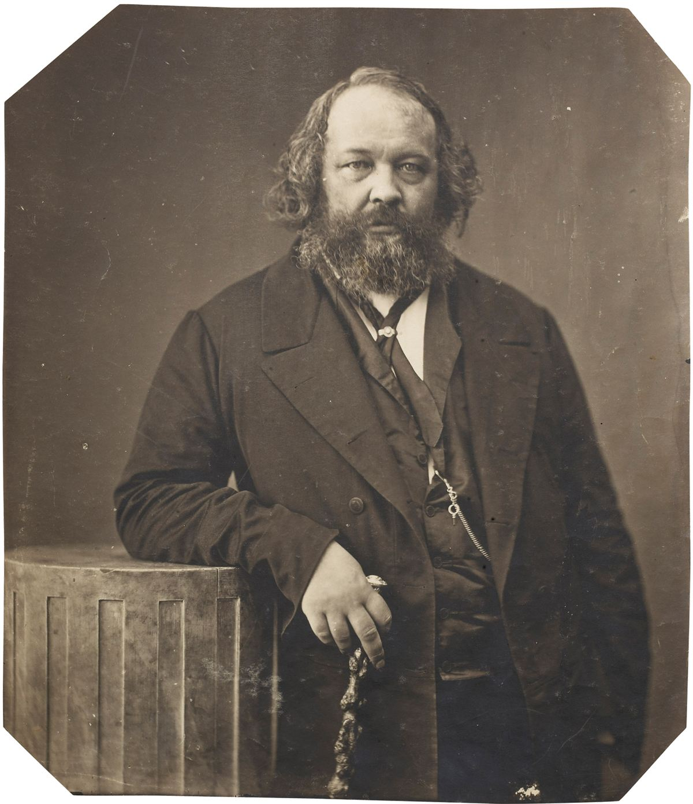


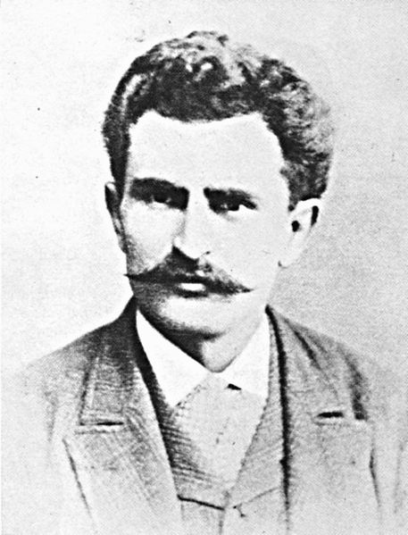


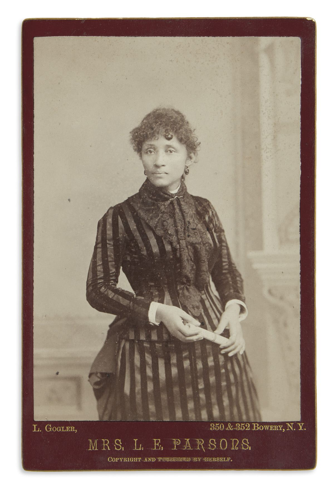


._Publiciste._Anarchiste._26-4-92._MET_DP290755.jpg){kind=link}


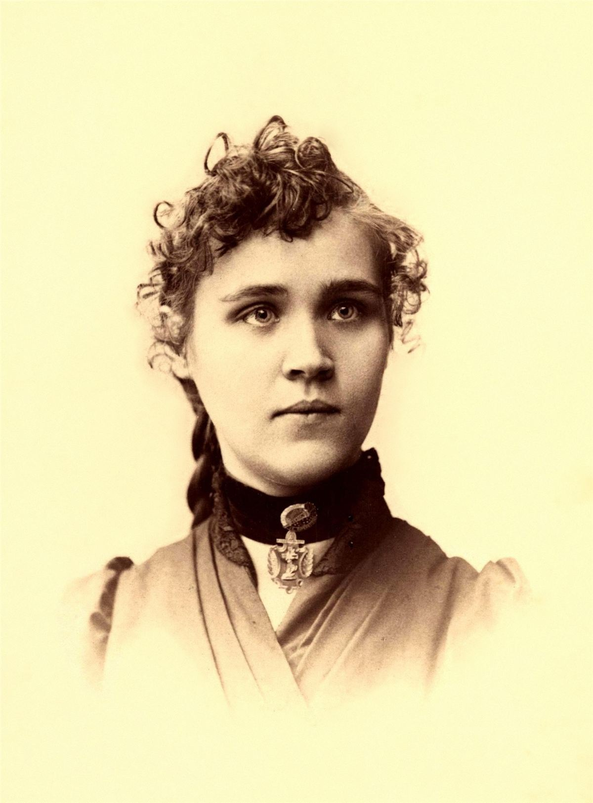


.jpg){kind=link}


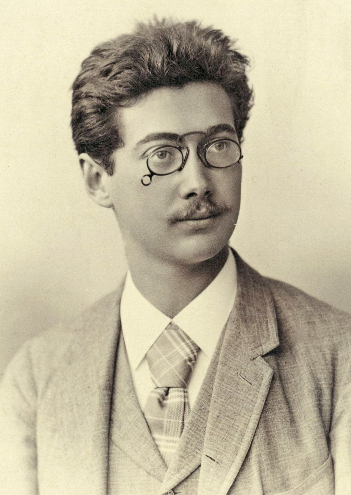
.jpg){kind=link}

.jpg){kind=link}


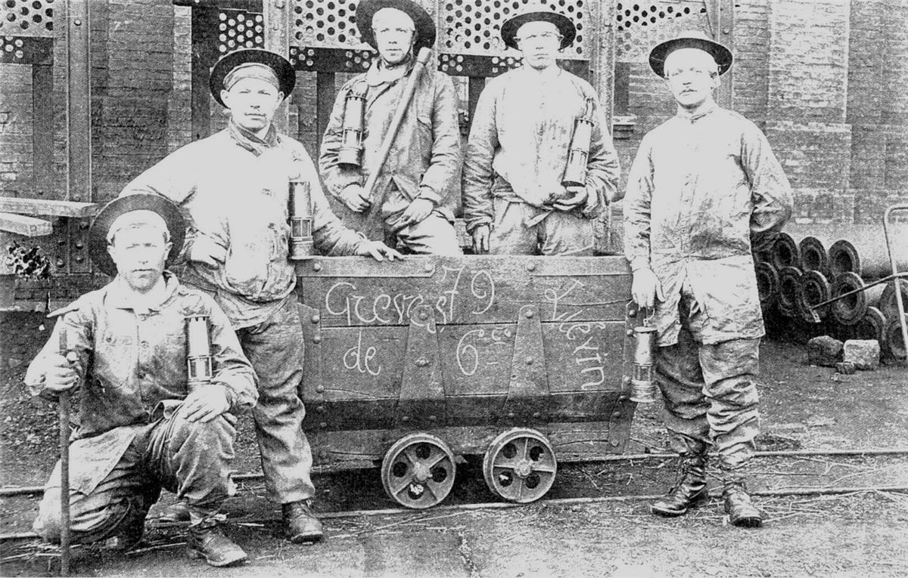


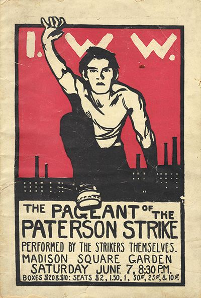


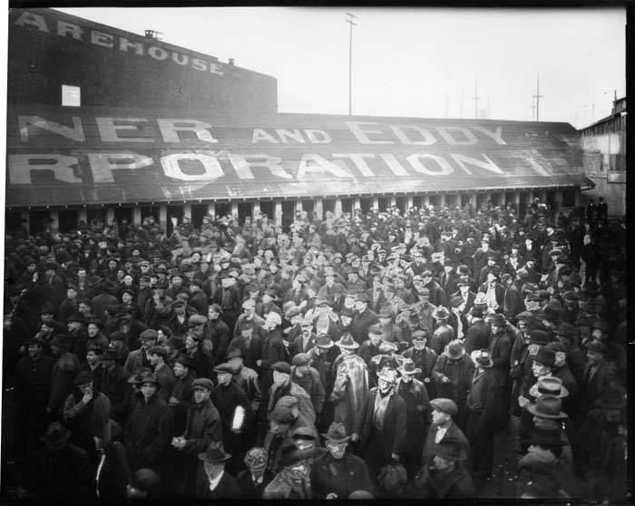
.jpg){kind=link}

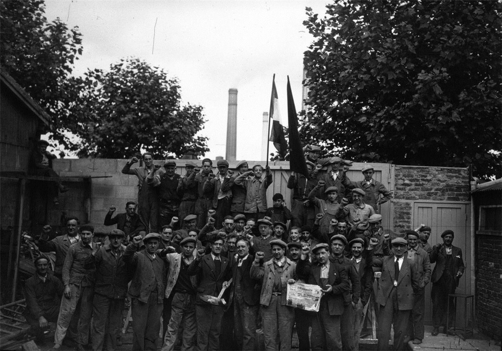


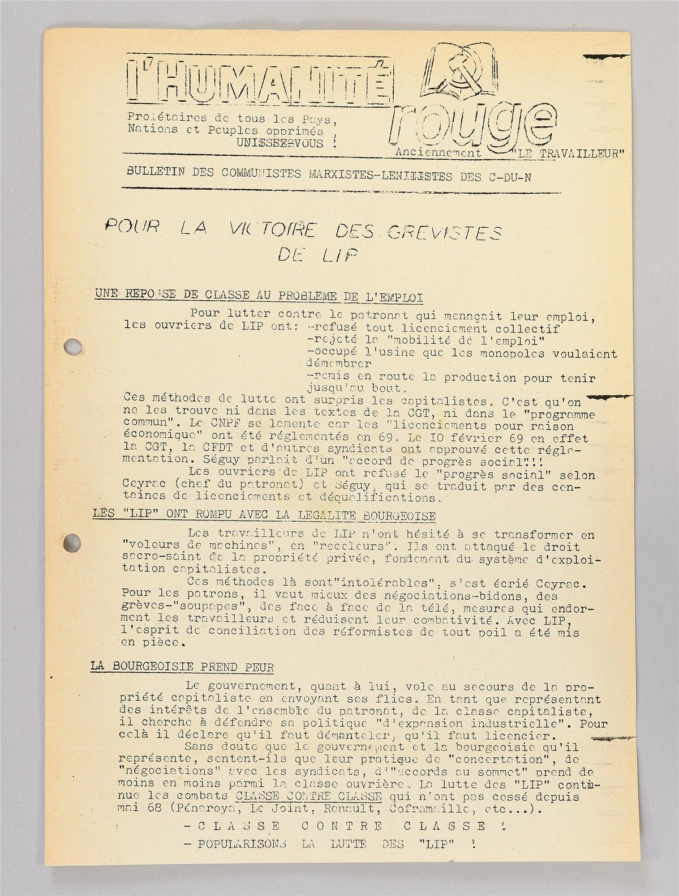


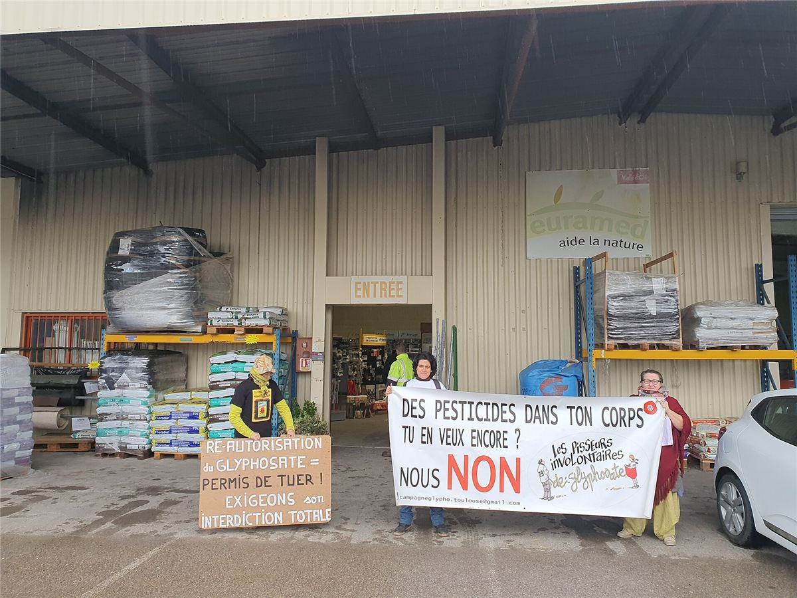

// les règles de la bande
Ce qu'on fait, ce qu'on ne fait pas
- Des mainsdessins, collages, photos et gravures faits par des personnes, jamais d'image générée par une machine.
- Des créditschaque image dit qui l'a faite et sous quelle licence.
- Des archives telles quellespas de photo d'époque colorisée ni retouchée pour lui faire dire autre chose.
- Des visages protégéssur une photo de lutte, on floute celles et ceux qui n'ont pas dit oui.
Tu dessines, tu colles, tu photographies ? La bande cherche des mains pour illustrer les fiches et donner des sœurs et des camarades à Mamie.